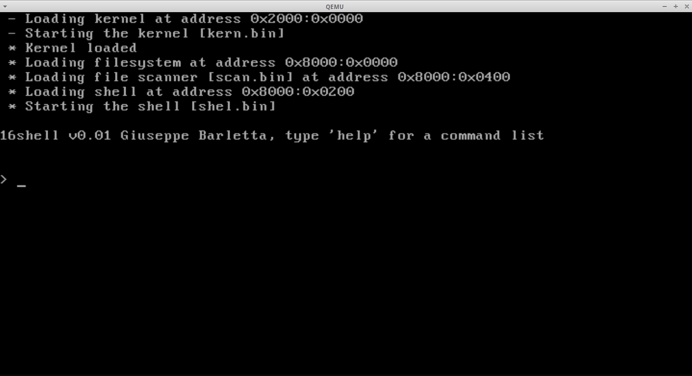

16bitOS

16bitOS è un piccolo sistema operativo a 16 bit (in modalità reale) per computer dotati di CPU x86. E' dotato di una semplice interfaccia a linea di comando e di alcuni programmi per la shell.
Perchè?
Volevo studiare il vero funzionamento di una macchina, quindi ho sviluppato questo piccolo sistema per mettere alla prova le mie conoscenze.
Come?
Ho sviluppato questo sistema interamente in assembly 8086 a 16 bit, compilando i sorgenti utilizzando NASM su un sistema Linux.
Introduzione
16bitOS è un kernel sviluppato interamente in Assembly a 16 bit. Questo significa che la macchina lavorerà in real mode (modalità reale).
In modalità reale un computer è in grado di utilizzare gli interrupt del BIOS, ossia delle funzioni messe a disposizione per gestire
varie componenti della macchina, come ad esempio un lettore floppy o la scheda grafica.
Attraverso queste routine, si è in grado di adattare il software in rapporto con l'hardware. Ad esempio, possiamo utilizzare
un certo interrupt che ci permette di mettere a schermo un carattere.
Ci sono comunque dei limiti nella modalità reale, infatti il massimo della memoria che può essere indirizzata è di 1MB, lasciando il
resto della memoria inutilizzabile.
Struttura del sistema
Il sistema operativo è composto da:
un bootloader (boot.bin, [bootloader/BootMain.asm])
un kernel (kern.bin, [kernel/KernelMain.asm])
un file scanner (scan.bin, [scanner.asm])
una shell (shel.bin, [shell.asm])
un comando help (help, [help.asm])
un comando halt (halt, [halt.asm])
un comando list (list, [list.asm])
Inoltre è composto da alcune funzioni che possono essere incluse nei file principali:
get_string (kernel/io/get_string.asm)
PrintHex (kernel/io/print_hex_byte.asm)
PrintNewLine (kernel/io/print_newline.asm)
PrintString (kernel/io/print_string.asm)
strcmp (kernel/string/strcmp.asm)
strlen (kernel/string/strlen.asm)
Il tutto viene compilato in file binario di tipo raw, ossia senza header, senza referenze e senza links ad oggetti. E' un
tipo di file binario puro, ossia composto solo da istruzioni x86.
Tutti i file compilati successivamente verranno scritti in un immagine floppy nei vari settori del floppy stesso, utilizzando il programma floppy_writer.
Nel settore 3 è presente la struttura del filesystem, composta da nome del file (9 bytes) e dal numero del settore in cui esso si
trova (1 byte). All'inizio di questa struttura, c'è un intero che rappresenta il numero di files presenti nel filesystem (2 bytes).
Con questo filesystem si possono rappresentare massimo 51 files, che occuperebbero 510 bytes della struttura filesystem su 512.
I restanti 2 bytes sono quelli utilizzati per memorizzare il numero di files presenti.
Processo di esecuzione del sistema operativo
Una volta acceso il computer, e dopo aver impostato il boot da floppy, il BIOS prende il primo settore del floppy e lo carica all'indirizzo 0x7C00:0x0000.
Di conseguenza il programma che si trova nel primo settore del floppy è il bootloader, boot.bin. Questo programma si occupa di leggere dal floppy il kernel e di caricarlo in memoria all'indirizzo 0x2000:0x0000. Quindi fa una jump a questo indirizzo,
ossia lo manda in esecuzione.
Mandato in esecuzione kern.bin, il kernel si occupa di caricare in memoria la struttura del filesystem all'indirizzo di memoria 0x8000:0x0000. Successivamente,
carica il file scanner all'indirizzo 0x8000:0x0400 e la shell all'indirizzo 0x8000:0x0200.
Dopo aver caricato tutto il necessario manda in esecuzione la shell con una jump. La shell si mostra come una piccola interfaccia utente a linea di comando.
Il funzionamento è molto semplice: permette di ricevere in input una stringa. Per eseguire un programma basterà immettere il nome del programma. Se vogliamo per esempio vedere che files sono presenti nel filesystem ci basta digitare "list".
Dopo aver immesso la stringa, e dopo aver premuto ENTER, la shell manda in esecuzione il file scanner che si occupa di analizzare il filesystem per trovare il file corrispondente. Se lo trova, prende il numero del settore nel quale si trova e lo manda in esecuzione.
Altrimenti imposta il registro AX a 0x1234 per fare in modo che ritornando alla shell venga messo a schermo un messaggio di errore ("Command not found").
NB: si può utilizzare boot.bin per rieseguire il processo di boot, ma si raccomandata di non mandare in esecuzione nuovamente il kernel o il filescanner, in quanto entrerebbero in un ciclo di lettura floppy che manderebbe in crash il computer.
Links utili
NASM - the netwide assembler
QEMU - a generic and open source machine emulator and virtualizer

This work is licensed under a Creative Commons Attribution-NonCommercial-NoDerivatives 4.0 International License.